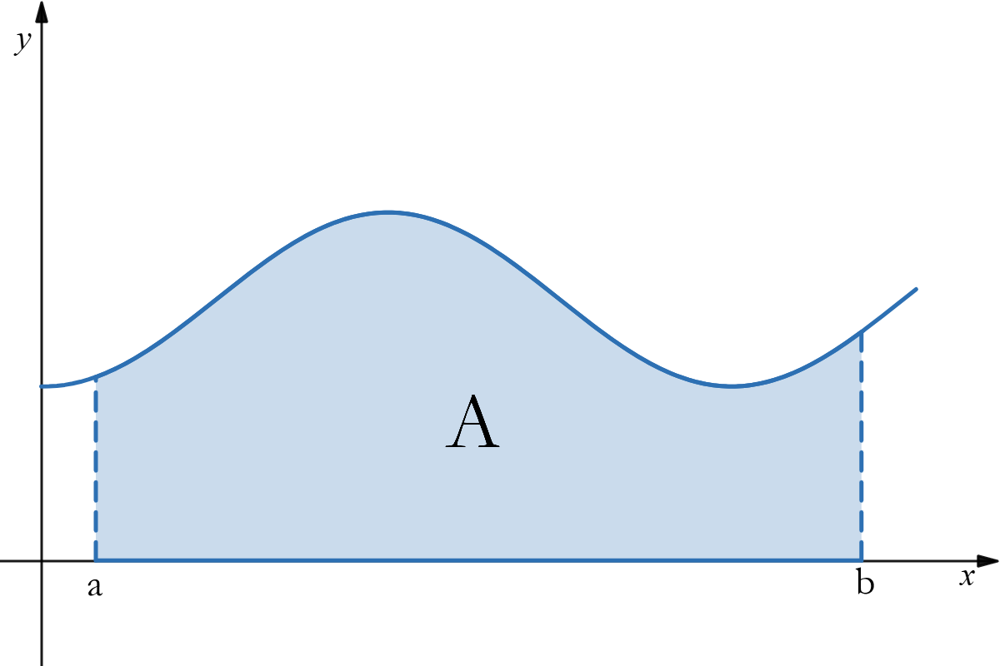

If \(f\) is continuous on and nonnegative on \([a,b]\), the are under the graph can be represented by \(A=\int_a^bf(x)dx\).
Antiderivative Method: If \(A\) is the are under the curve from \(a\) to \(x\) then \(A'(x)=f(x)\).
If \(A(x)\) is an antiderivative of \(f(x)\), then every other antiderivative of \(f(x)\) on \([a,b]\) can be obtained by adding a constant to \(A(x)\).
Let $$F(x)=A(x)+C$$ be any antiderivative of \(f(x)\) and consider what happens when we subtract \(F(a)\) from \(F(b)\):
$$\begin{aligned}F(b)-F(a)&=[A(b)+C]-[A(a)+C] \\ &=A(b)+C-A(a)-C \\ &=A(b)-A(a) \\ &=A-0 \\ &=A \\ &=\int_a^bf(x)dx\end{aligned}$$
This is a method to evaluate definite integrals using these antiderivatives. Since definite integrals are the limit of a Riemann sum, we don't actually need to take the limit. Instead, we can use these antiderivatives as a way to evaluate definite integrals and calculate exact values for the area under the curve.
If \(f\) is continuous on \([a,b]\) and \(F\) is any antiderivative of \(f\) on \([a,b]\), then $$\int_a^bf(x)dx=F(b)-F(a)$$
$$\int_a^bf(x)dx$$
$$F(x) \bigg\vert_a^b$$
$$F(b)-F(a)$$
Evaluate and end up with a number.
Evaluate \(\int_1^9\sqrt{x}dx\)
$$\int_1^9\sqrt{x}dx$$
$$\frac{2}{3}x^\frac{3}{2}\bigg\vert_1^9$$
$$\frac{2}{3}(9)^\frac{3}{2}-\frac{2}{3}(1)^\frac{3}{2}$$
$$\frac{52}{3}$$
To evaluate an integral using the FTC Part 1, we need to be able to find the antiderivative of the integrand. Thus, it is essential to know what kinds of functions have antiderivatives.
We know there is a close relationship between \(\int_a^bf(x)dx\) and \(\int f(x)dx\).
However, definite integrals and indefinite integrals differ in two important ways.
For example: \(\int x^2dx=\frac{1}{3}x^3+C\) and \(\int t^2dx=\frac{1}{3}t^3+C\) but \(A=\int_a^bf(x)dx=\int_a^bf(t)dt\)
Because the value of integration in a definite integral plays no role in the result, it is often referred to as a dummy variable.
Key result: You can change the differential without changing the result. But you should have the same variable for the integrand and the differential.
| Good | Bad |
|---|---|
| \(\int_1^3x^2dx\) | \(\int_1^3x^2dt\) |
| \(\int_{-1}^7t^2dt\) | \(\int_{-5}^12u^\frac{5}{2}dx\) |
| \(\int_\pi^5\sin(\theta)d\theta\) | \(\int_\pi^7\cos^2(\theta)du\) |
Evaluate the integrals